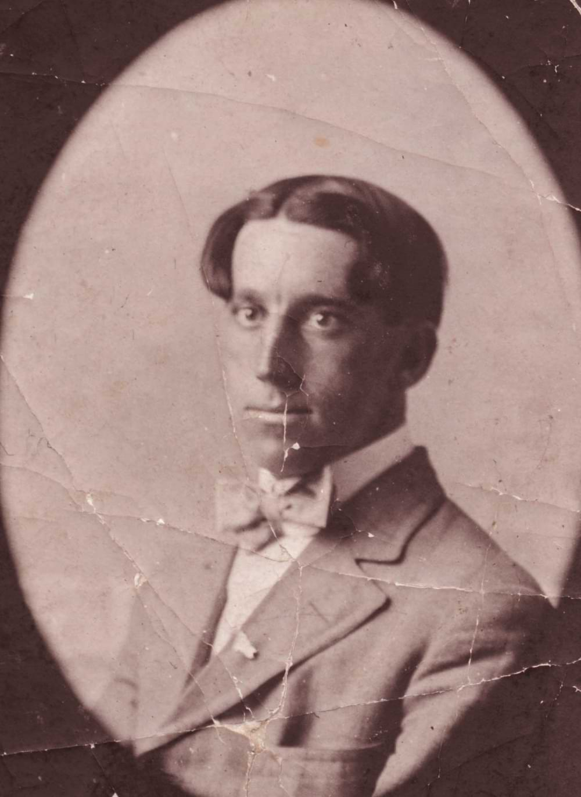

Объект №: SCP-014
Класс объекта: Безопасный

Особые условия содержания:SCP-014 следует содержать в Зоне ██ на стуле с подлокотниками, желательно напротив окна.
В помещении должна звучать музыка, по возможности, непрерывно, причем исполняемые произведения должны быть созданы не позднее 1937 года.
В комнате должна присутствовать камера наблюдения
Описание: SCP-014 - мужчина европеоидной расы, на вид приблизительно 30 лет, волосы черные, глаза карие, лицо слегка округлое, имя, согласно документам, — Роберт Четфорд. В 1915 был помещен психиатрическую лечебницу Норвич в Коннектикуте с диагнозом "паранойя". По заявлениям пациента, он осужден на вечную жизнь и медленное превращение в камень. В 1937 году лечебница была закрыта, и пациенты распределены в различные учреждения. SCP-014 привлек внимание Фонда в 19██, благодаря распространению слухов о полностью неподвижном пациенте, не проявляющем признаков старения. Расследование показало необходимость помещения объекта под надзор Фонда.
По всем внешним признакам, SCP-014 — обычный человек, за исключением того, что он не стареет и не демонстрирует признаков метаболизма: не ест, не пьет, не потеет, не проявляет каких-либо других жизненных функций. Он дышит только для того, чтобы говорить, и, за исключением движений глаз и речевого аппарата, судя по всему, совершенно неподвижен. Несмотря на то, что его поза не изменялась на протяжении десятилетий, на теле пациента не появилось пролежней, и его мышцы не были атрофированы. Пациент способен к нормальному общению, но не проявляет интереса к событиям, происходившим с момента его помещения в лечебницу.
Этот сайт является моим проектом в Kodland.
Вся информация была/будет взята с scpfoundation.net